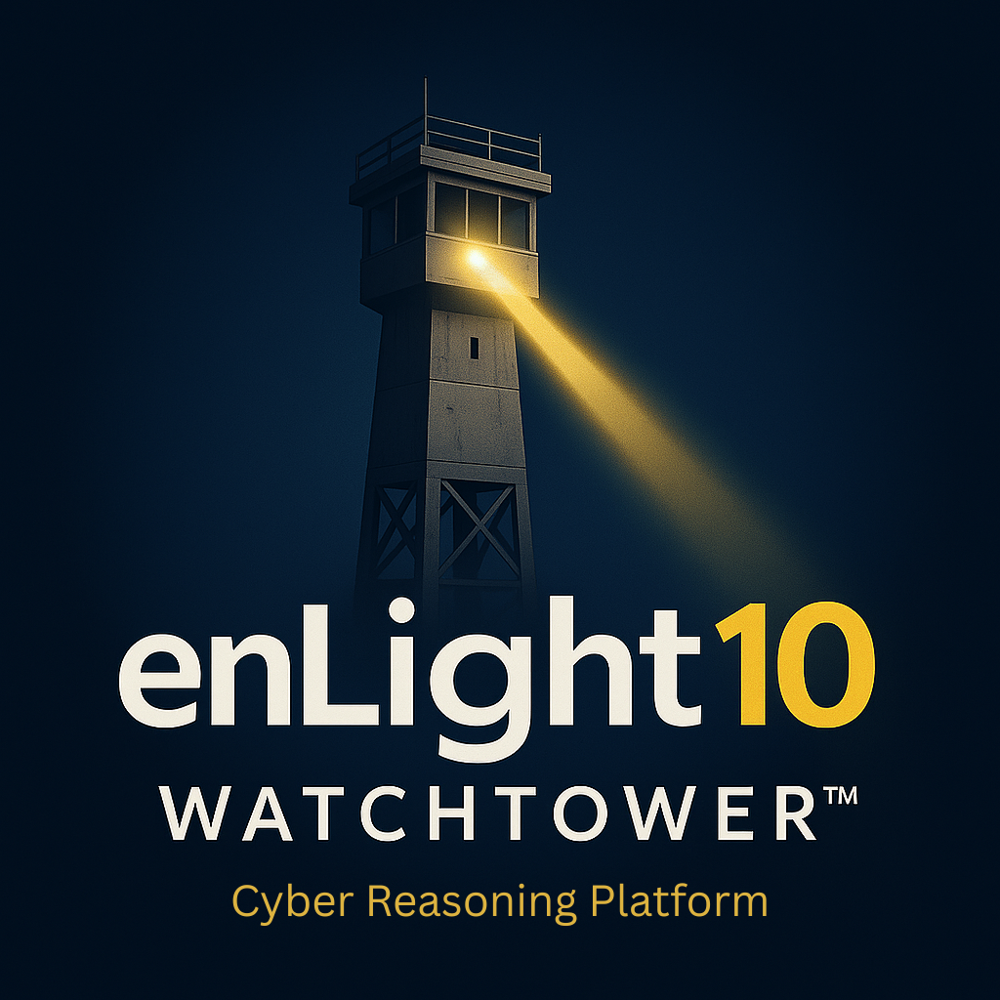

Findings intake
Bring assessment findings, vulnerability observations, control gaps, and review notes into a shared workflow.
Watchtower
Watchtower supports assessment-to-operations work by organizing findings, evidence, owners, POA&Ms, risk decisions, remediation status, reporting, and operational visibility.
The Cyber Reasoning Platform concept still matters: Watchtower is built to help teams reason over cybersecurity work, keep context attached to decisions, and maintain a defensible record of improvement.

Bring assessment findings, vulnerability observations, control gaps, and review notes into a shared workflow.
Attach artifacts, screenshots, exports, tickets, policies, and decision records to the work they support.
Track owners, due dates, status, dependencies, and closure evidence.
Connect vulnerabilities, controls, risks, and remediation actions so priorities stay visible.
Document accepted risk, deferred work, compensating actions, and leadership decisions.
Produce status views for executives, program teams, partners, audits, and recurring security reviews.
An assessment report is useful, but the real work starts after the findings are delivered. Watchtower helps keep that work alive: what was found, why it matters, who owns it, what evidence supports it, what changed, and what still needs a decision.
Start with cyber readiness, CMMC/NIST readiness, vulnerability management review, Microsoft 365 security review, or OT cybersecurity assessment support, then use Watchtower to manage remediation and evidence.